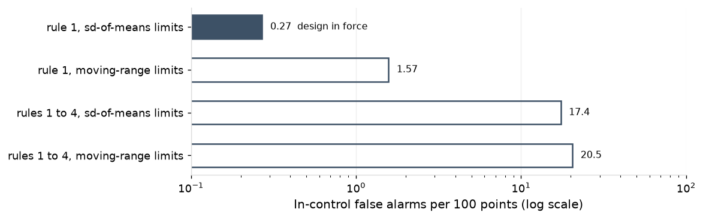
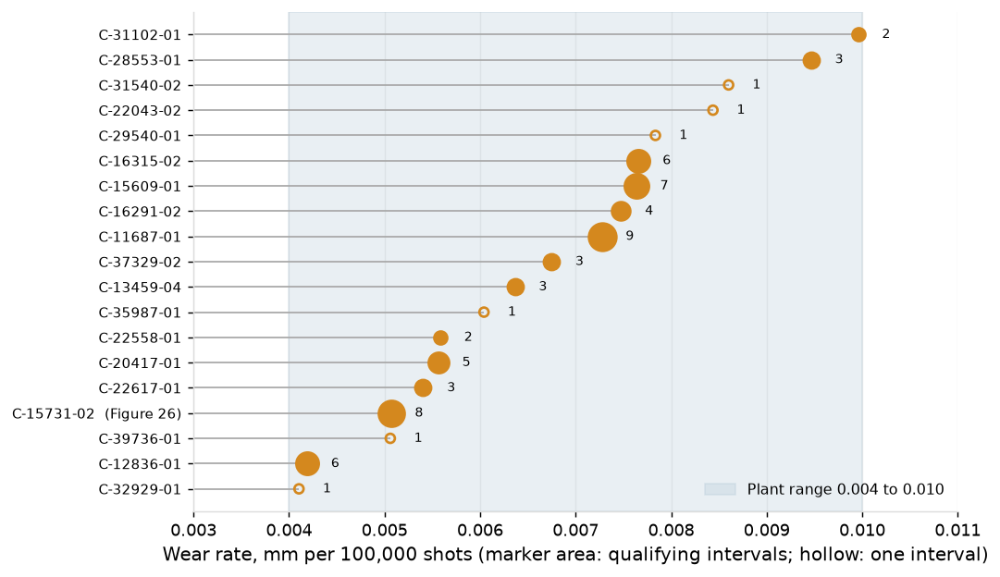

1. Executive Summary
This report revalidates the plant's SPC chart design on the 1 July 2025 to 30 June 2026 record: 1,380 active charts on 11 presses, 379,677 subgroups, and the per-stroke tonnage charts on 90.9 million strokes. It asks four questions of the charts, in the order of Section 2: what is charted and on what chart type; how limits are set, held and verified; whether each chart signalled when the process changed and stayed quiet when it did not; and whether the variance structure of each characteristic class is the one its chart type assumes. The per-stroke tonnage charts are taken through the same four questions in their own block of each subsection. Performance is tested by comparing each chart's signals with the false-alarm rate its own rules and baseline size predict, on intervals with no special cause, so a chart type on the wrong variance structure shows as a rate far from expectation. Variation is tested by decomposing each class into within-subgroup, between-subgroup, between-coil and wear components and checking the chart type against where the variance lies.
Section 3 asks the same four questions of one part family, the three C110 copper parts on PR-03: 27 charts on three dies and three check fixtures. The plant is reported at summary level because 1,380 charts cannot be shown one at a time; the family is where every chart, baseline, limit set, fit and stop is shown in full, so the plant-level rates can be read against the records that produce them.
On both scopes the chart selection holds. Every special cause in the record was caught by the chart designed for it and every alarm was closed by 30 June: on the plant, 1,657 routine alarms on 58 runs with a cause found, one soft coil, one mislogged sharpening and 427 die and punch events stopped on the stroke (Table 2); on the family, one die at a new level, one fixture drifting, one rebuild and the soft coil (Table 5). On intervals with no special cause the charts signalled close to their design rate on both scopes, with the same departures for the same reasons: on the plant, regression charts above expectation on level changes at sharpening that pass verification; on both, three-way charts below it because their limits carry the residual coil offset by design; and the family's cut-geometry charts above it on rules 3 and 4 under limits held across sharpenings.

The variance structure is the one each chart assumes on every measured class (Figure 14), and the family's characteristics show it one at a time (Figure 22). The design load is 133 false alarms a week across the plant; verification of limits held across 408 sharpenings failed on 8.1%, each a real level change. PR-03's per-stroke charts stopped it 97 times with the chipped punches caught at a median 0 strokes from the onset; its nothing-found rate, 2.21 per million strokes against 1.02 for the plant, is the one family figure outside the plant's pattern.
Two actions follow: the 23 three-way limit sets issued at the annual review on fewer than ten coil changes are re-issued as ten accrue, and the regression charts' verification criterion is tightened to 1.0 sigma with the line re-fitted at each planned trigger.
2. SPC Chart Summary
2.1 Overview
Characteristic charts.
At 30 June 2026 there are 1,380 active SPC charts on 11 presses. The 1,380 charts correspond to the five characteristic classes: formed heights and bend angles, cut geometry (hole position and part length and width), hole diameter, flatness, and sheared edges. By chart type: 399 three-way charts, 23 regression charts, 474 X-bar and R charts, 483 p charts and one three-way chart on a hole position. Section 2 covers the plant; Section 3 follows the C110 family on PR-03 through the same headings.


Each class runs on the chart its variation calls for, and every variable chart runs on a gauge in gating status. Formed heights and bend angles run on three-way charts with a coil-change chart beside them; hole diameters on regression charts (tool-wear charts, with the centre line fitted on shots since sharpening); cut geometry and flatness on X-bar and R; sheared edges and the pin checks on hole diameters on p charts. All 897 variable charts have a current calibration and a gauge study on file, 825 on the gauge itself and 72 through the study of the gauge type at the press. 16 charts are in a baseline and none is past its recalculation trigger.
Per-stroke tonnage charts.
Beside the 1,380 charts on part characteristics, 47 per-stroke charts run on press tonnage: on each press an EWMA on the per-stroke total and a residual chart on each load channel's share of it, read on every stroke by the press monitor. They catch what no subgroup check can see on the stroke: a chipped or worn punch and slug pulling.
2.2 Chart Limits
Characteristic charts.
Limits are set once from a baseline and held across sharpenings under verification, so a chart's limits change only when the process has. A baseline is 25 subgroups; a three-way baseline spans at least ten coil changes. A sharpening does not reset the limits: the first 25 routine subgroups after it verify them, and a failed verification starts a new baseline. Formed charts are verified after a rebuild or a forming-station repair only, since a sharpening does not touch the forming stations. Regression lines are re-fitted at each verification that passes, with the limits' sigma held.
The record holds 1,216 limit sets on 897 variable charts, and 319 new sets were issued in the year: 146 after rebuilds, 74 at the annual review on 19 January 2026, 65 regression lines re-fitted, and 34 after a failed verification. 244 Phase I baselines were completed, 199 X-bar and R and 45 three-way; subgroups beyond the baseline's own limits are screened (94 subgroups in 64 baselines), and Anderson-Darling on the baseline means passes at 5% on 92.9% of them.

Two charts changed in the year, both from the record.
- C-15731-02 (D-5731-A, PR-03): the regression chart's recalculation trigger shortened from 30 to 20 subgroups, first applied 8 December 2025, after the die's intervals shortened under the burr line and the regression lagged them.
- C-34479-05 (D-4479-C, PR-10): moved from X-bar and R to a three-way chart on 9 March 2026, after 35.2% of its variance was found between coils.
The die log carries dates without times, so a run is placed in the interval of the last sharpening dated on or before its start day. 15 of 1,399 runs start on the day their die's sharpening is logged, and 92 span a logged sharpening date, where the log date and the run times disagree; both enter the regression charts' shot counts and the wear rates in 2.4.
Verification. 1,308 verifications were completed in the year: 1,100 after sharpenings on X-bar and R charts, of which 34 failed (3.1%); 67 on regression charts, 2 failed (3.0%); and 141 after rebuilds on three-way charts, 3 failed (2.1%). By sharpening, 33 of 408 failed on at least one chart of the die (8.1%). The passes sit close to centre, at a median offset of 0.21 sigma, and 19 of the 1,269 passes lie between 1.0 and 1.5 sigma. On an unchanged process the mean criterion fails by chance on under 0.001% of verifications, so the failures are the dies that came back from the sharpening at a different level.
Takeaway: verification fails on 3% of charts and 8% of sharpenings, and almost every failure is a real level change.
| Verification | Verifications | Failed | Failure rate |
|---|---|---|---|
| X-bar and R, after sharpening | 1,100 | 34 | 3.1% |
| Regression, after sharpening | 67 | 2 | 3.0% |
| Three-way, after rebuild | 141 | 3 | 2.1% |
| By sharpening, any chart of the die | 408 | 33 | 8.1% |
The annual review's three-way sets. 23 of the 45 three-way limit sets issued at the review span one to nine coil changes, against the baseline rule of ten, because the review computed on a trailing window of 50 to 978 subgroups rather than on the baseline rule. Their centre lines are sound; their individuals limits understate the coil offset the design is meant to carry. They are re-issued as ten coil changes accrue on each chart.
Per-stroke tonnage charts.
The per-stroke limits are set at each run start from a baseline of 500 production strokes, 2,219 times in the year, and are not held across runs. The EWMA on the per-stroke tonnage total runs with lambda 0.02 and L 5.5; a residual chart on each channel's share of the total runs beside it at L 5.5.
The EWMA limits are set on the AR(1)-adjusted variance of the total. At known parameters the in-control ARL is 77.8 million strokes; with the parameters estimated from 500 strokes it is 2.64 million. L is set at 5.5 for the estimated case: at L 4.9 the known-parameter ARL of 3.68 million falls to 312,000 strokes once estimation is allowed for, about one false stop in eight shifts on PR-03.
2.3 Performance
Characteristic charts.
How the charts performed. A chart has two jobs: signal when the process has changed, and stay quiet when it has not. On the first, every change the record holds was caught by the chart designed for it. A signal is closed either as no cause found, which is a false alarm, or with the cause that was found, which SPC calls a special cause. 1,657 routine alarms on 58 runs closed with a special cause, 1,620 of them on 53 runs where a die came back from sharpening or rebuild at a new level and its verification failed; the coil-change chart caught the one soft coil; the regression chart on PR-06 caught a sharpening logged at the wrong count; and the per-stroke charts stopped the presses on 274 slug pulls, 82 worn punches and 71 chipped punches, the chipped punches at a median 0 strokes after the onset. All were closed by 30 June.
Takeaway: every special cause in the record was caught by the chart designed for it, and every alarm was closed by 30 June 2026.
| What was caught | Chart | Events | Alarms |
|---|---|---|---|
| Die at a new level after sharpening or rebuild | X-bar and R, three-way, regression, with verification | 53 runs | 1,620 |
| Fixture drift (F-14026) | X-bar and R, three-way | 1 run | 30 |
| Strip misfeed, slug pulling, gauge zero, lubricant | X-bar and R, three-way | 6 runs | 7 |
| Sharpening logged at the wrong count (PR-06) | regression | 1 | 1 |
| Soft coil (C-15731-07) | coil-change | 1 | 1 |
| Slug pulling, worn and chipped punches | per-stroke EWMA and channel share | 427 stops | 427 |
On the second job, the charts signalled at close to their design rate. On charts with no special cause in the interval, signals ran at 1.32 times expectation on cut geometry, 0.88 on flatness, 0.83 on formed heights and bend angles and 1.79 on hole diameter, with expectation set at each chart's own rules and baseline size. Flatness, at 0.88 on 5,738 subgroups, sits just under its band and inside its chance interval of 0.75 to 1.02. The two departures beyond chance have reasons the record shows: the regression charts on hole diameters signal on small level changes at sharpening that pass verification, and the three-way charts on formed characteristics carry the residual coil offset in their limits by design (2.3 and 2.4). The 483 p charts are outside the comparison: the SPC export carries their counts but no limits or alarm flags, so their signals cannot be assessed on this record. The burr checks recorded 268 nonconforming pieces in 219,535 checked (0.12%) and the pin checks 278 nonconforming in 324,225 checked.

False alarms. The price of the charts as designed is 133 false alarms a week across the plant, 3.1 per 100 routine subgroups on 4,236 subgroups a week, and in the year 10,499 routine alarms closed as no cause found. The load falls where the subgroups are: PR-03 carries 23.7 a week on 750 subgroups, against a plant median of 12.9.

The rules in force were chosen for the false-alarm load they carry as much as for the shifts they catch, and the year's signals ran close to that design on two chart types and above it on one. Under rule 1 alone an X-bar chart signals once in 370 in-control subgroups; with Western Electric rules 1 to 4 it signals once in 92, and catches a one-sigma shift in 9 subgroups instead of 44. Limits estimated from 25 subgroups move both figures: rule 1 to once in 407, rules 1 to 4 to once in 74.
Takeaway: rules 1 to 4 catch a one-sigma shift five times faster than rule 1 alone, at four times the false alarms.
| Shift (sigma) | X-bar, rule 1 | X-bar, rules 1 to 4 | X-bar, rule 1, baseline 25 | X-bar, rules 1 to 4, baseline 25 | Three-way individuals, rule 1 | Three-way, all three charts | Three-way, all three charts, baseline 25 |
|---|---|---|---|---|---|---|---|
| 0.0 | 370 | 92 | 407 | 74 | 370 | 72 | 63 |
| 1.0 | 44 | 9 | 58 | 10 | 44 | 32 | 34 |
| 1.5 | 15 | 5 | 18 | 5 | 15 | 14 | 17 |
| 2.0 | 6 | 3 | 7 | 3 | 6 | 6 | 8 |

Observed against expected. On charts with no special cause in the interval, the year's signals run at 1.30 times expectation on X-bar and R, 0.83 on three-way and 1.79 on regression, with expectation set at each chart's own baseline size and rules.
- X-bar and R and regression run above expectation on rules 3 and 4: 1.39 and 2.09 per 100 against 0.45 and 0.78 at known parameters on X-bar and R, 1.20 and 2.37 on regression. Two things in the record produce this. Limits are held across sharpenings, so small persistent offsets (operator reproducibility on the fixture, a part running on another press) accumulate rule 3 and 4 signals that a recomputed chart would absorb. And a level change at sharpening of up to 1.5 sigma passes verification and then runs under the old limits: 14 of 1,131 passes on these charts lie between 1.0 and 1.5 sigma.
- Three-way runs below expectation because its individuals limits carry the residual coil offset left after centring (2.4), so rule 1 signals less often than an independent process would.
- The coil-change chart raised 28 rule 1 signals in the year, 27 closed as no cause found and one the soft coil on C-15731-07 on 27 May 2026. On the 2,292 points with six or more coils on record, where the expectation can be set from the record's own lot structure, it raised 18 against 12.1 expected (1.49 times, with a 95% interval of 0.88 to 2.35); the expectation is above the independent rate because coils arrive in lots of one to four that share 76% of the coil variance. The other ten signals sit on points whose limits rest on coils before the record.
Takeaway: the excess on X-bar and R and regression charts is on rules 3 and 4, and comes from limits held across sharpenings.
| Chart | Routine subgroups | Signals | Observed per 100 | Expected per 100 | Observed over expected |
|---|---|---|---|---|---|
| X-bar and R | 102,932 | 4,628 | 4.50 | 3.47 | 1.30 |
| three-way | 102,906 | 2,430 | 2.36 | 2.86 | 0.83 |
| regression | 7,563 | 329 | 4.35 | 2.43 | 1.79 |


By press, PR-01 and PR-09 run furthest above expectation (3.91 against 3.18 per 100, and 3.46 against 2.81) and PR-10 furthest below (2.60 against 3.26); the other eight sit within 0.7 per 100 of expectation.
Autocorrelation. Subgroup means within a coil carry a median lag-1 autocorrelation of -0.07 (10th to 90th percentile -0.19 to 0.02). Negative autocorrelation of that size lengthens the in-control ARL under rules 1 to 4 from 92 to 109 and leaves rule 1 unchanged, so the limits need no adjustment for it.

Per-stroke tonnage charts.
The per-stroke charts catch a chipped punch on the stroke, where an hourly check would pass up to 11,773 parts on PR-03 before seeing it.
A chipped punch drops the total by a median 3.06% and moves the largest channel share by 1.32 points. At that shift the EWMA signals in 38 strokes; the channel-share chart signals first on most chips, because the share moves on the stroke of the break. Lambda 0.02 is the choice for shifts of 2% to 3%: at a 2% step it signals in 76 strokes against 117 at lambda 0.05 and 425 at lambda 0.10, with the same in-control ARL.

The record. The charts stopped the presses 520 times in the year: 274 on slug pulling, 82 on a worn punch, 71 on a chipped punch and 93 with nothing found. The false-stop rate is 1.02 per million strokes, 82 of the 93 on the EWMA. Strokes were kept for 204 of the stops. On those, chipped punches were stopped at a median 0 strokes from the onset, 90th percentile 20; the EWMA caught 8 chipped punches in the year and the channel-share chart 63, at medians of 38 and 0 strokes on the 4 and 27 with strokes kept.

Parts exposed. Under the per-stroke charts the median chipped punch exposed no parts. Under an hourly check the same failures would have exposed up to 6,499 parts at the median press and up to 11,773 on PR-03, with half that on average; the half-hourly check on the high-speed presses halves both.

Actions.
- 23 of the 45 three-way limit sets issued at the annual review span fewer than ten coil changes; they are re-issued as ten coil changes accrue (2.2).
- The regression charts' verification criterion is tightened to 1.0 sigma, since the level change at sharpening is the larger part of their excess, and the line is re-fitted at each planned trigger as well as at each passed verification (2.3).
2.4 Variation
Characteristic charts.
The chart for each class follows from where its variance lies, and the four measured classes differ enough that no one chart serves them all.
- Formed height and bend angle: 80.0% of the routine variance lies within the subgroup after centring, 5.2% between subgroups within a coil, and 13.5% is the residual coil offset that centring leaves. Before centring, 49.7% of the incoming variance on coil-change subgroups lies between coils.
- Hole diameter: 36.2% of the variance is the wear trend over a sharpening interval; 56.1% lies within the subgroup about the trend.
- Cut geometry: 97.4% within the subgroup, 0.8% between coils.
- Flatness: 97.5% within the subgroup.

The coil effect and centring. The coil effect on formed characteristics is predictable from the coil certificate, which is why centring at the coil change removes it. Across 242 formed characteristics, thickness and hardness on the certificate explain the coil means with a median R squared of 0.82; the residual about the fit is 3.2% of tolerance, against coil means that spread 10.1% of tolerance.
The three-way design. On formed characteristics the level resets at each coil, and centring on a 10-piece coil-change subgroup leaves each coil with a residual offset of 39.1% of the variance of the subgroup means. Limits from the average moving range do not carry that offset: with them rule 1 alone would signal on 1.57 in-control points per 100, and rules 1 to 4 on 20.5. The individuals limits in force therefore come from the standard deviation of the baseline means, and rules 2 to 4 are off on the individuals chart: rule 1 signals on 0.27 per 100, the nominal rate. The range and moving-range charts run rule 1 at 0.46 and 0.92 per 100. A coil-level shift is the coil-change chart's job, not the routine chart's.

The regression chart. The centre line is the regression of diameter on shots since sharpening over the die's earlier intervals, re-fitted at each verification that passes with the limits' sigma held, so the line follows the die without a new baseline. Wear rates by die run from 0.0041 to 0.0100 mm per 100,000 shots on the 19 charted hole diameters; six rest on a single sharpening interval.

Per-stroke tonnage charts.
The per-stroke total is autocorrelated at lag 1 by a median 0.60 and varies by 1.49% within a run, which is why the EWMA limits are set on the AR(1)-adjusted variance rather than the stroke-to-stroke one; a chipped punch moves it by a median 3.06% and the largest channel share by 1.32 points, which sets the shift the lambda is chosen for.
3. Part Family
The three C110 copper parts on PR-03 (P-11333 on D-1333-C, P-15731 on D-5731-A, P-14026 on D-4026-A) are followed through the same four headings as the plant.
3.1 Overview
Characteristic charts.
The family's three parts carry 27 of the plant's 1,380 charts: 12 formed heights and bend angles on three-way charts, 7 cut geometry on X-bar and R, 5 hole diameters (one on a regression chart, C-15731-02, and four on pin checks) and 3 sheared edges on burr checks. The register, with each chart's limits basis, gauge, study and status, is in the appendix.
18 of the family's 20 measured charts run on the part's own check fixture; the other two run on a caliper and an indicator. F-15731 stands at 6.0% of tolerance on its 2 April 2026 study and F-14026 at 5.3% on 17 June 2026, after the rebuild that followed its 3 June restudy at 16.7%; F-11333 stands at 16.3% on 5 May 2026, in the band that keeps a gauge in service with a restudy, due 17 August 2026.

Per-stroke tonnage charts.
PR-03 carries 3 per-stroke charts, an EWMA on the total and 2 channel-share charts.
3.2 Chart Limits
Characteristic charts.
20 limit sets were issued on the family's charts in the year: 9 after rebuilds, 7 regression re-fits, 3 at the annual review and 1 after a failed verification.
Verifications on the three dies: 51 X-bar and R after sharpening with none failed, 8 regression-chart with 1 failed on D-5731-A, 16 three-way after rebuild with 3 failed, all on D-4026-A; by sharpening, 1 of 23.
The baseline on C-11333-02 after the rebuild of 9 May 2026 shows the procedure: 25 routine subgroups on one run, limits 24.381 to 24.435 mm on the means and a range limit of 0.0988 mm, Anderson-Darling 0.53 against a critical value of 0.73. Subgroup 18 carries a range of 0.106 mm, beyond the range limit, and is flagged. The record keeps it in the limits; recomputed without it the mean limits move by under 0.002 mm and the range limit by 0.005 mm.

On C-15731-02 the line in force (27 May 2026) runs at 0.0058 mm per 100,000 shots from 9.4555 mm with limits of plus and minus 0.0060 mm; the chart ran on ten limit sets in the year, listed in the appendix.
Per-stroke tonnage charts.
PR-03's per-stroke limits were set at 151 run starts in the year.
3.3 Performance
Characteristic charts.
The family's charts caught every special cause on the three parts in the year and ran at 1.13 times expectation overall, with the excess on one class. 107 routine alarms on 3 runs closed with a special cause: 54 on one run where D-5731-A came back from sharpening at a new level and its verification failed, 30 on one run of P-14026 as F-14026 drifted, and 23 on two runs of P-14026 after its rebuild, whose verification failed on three of the die's four three-way charts. The coil-change chart caught the soft coil on C-15731-07 on 27 May 2026. 657 alarms on 39 runs closed as no cause found, and every alarm was closed by 30 June.
Takeaway: the family's special causes in the year were one die at a new level, one fixture drifting and one rebuild, each caught by the chart designed for it.
| What was caught | Chart | Events | Alarms |
|---|---|---|---|
| D-5731-A at a new level after sharpening | regression, with verification | 1 run | 54 |
| F-14026 drifting | X-bar and R, three-way | 1 run | 30 |
| P-14026 at a new level after rebuild | three-way, with verification | 2 runs | 23 |
| Soft coil on C-15731-07 | coil-change | 1 coil | 1 |
On charts with no special cause in the interval, 10,369 routine subgroups raised 368 signals against 327 expected, 1.13 times (95% interval 1.01 to 1.25). By class: formed 0.80 (151 on 6,313; interval 0.68 to 0.94), below its band for the reason the plant's three-way charts are (2.3); hole diameter 0.40 on 296 subgroups, inside chance (0.08 to 1.16); and cut geometry 1.64 (214 on 3,760; interval 1.43 to 1.88), above its band beyond chance. The excess is on rules 3 and 4, as on the plant's X-bar and R charts.

Per-stroke tonnage charts.
The per-stroke charts stopped PR-03 97 times in the year across every part it ran: 34 on slug pulling, 10 on a worn punch, 11 on a chipped punch and 42 with nothing found. The chipped punches were stopped at 0 strokes from the onset on 10, by the channel-share chart, and at 34 strokes on the one the EWMA caught. PR-03's nothing-found rate is 2.21 per million strokes against 1.02 across the plant.

On 13 May 2026 the EWMA on PR-03 stopped run R26-00820 at stroke 239,498, 34 strokes after the estimated onset, on a punch found chipped and replaced; the press restarted at 11:55.

3.4 Variation
Characteristic charts.
The family's characteristics show the plant's structure one at a time: the formed heights and bend angles carry between-coil shares of 7% to 31% on the routine record and 22% to 52% incoming, the hole positions 0% to 6%, and the one measured hole diameter, C-15731-02, a 23.5% wear trend.

The coil effect is predictable from the certificate on the 7 of the family's 12 formed characteristics with a fit on record, as across the plant; the other five, all on P-15731, carry 13 coil-change subgroups in the year, fewer than the 20 the fit requires. On C-11333-05 the fit is 2.73 mm of height per mm of certificate thickness and -0.0094 mm per HRB of hardness, R squared 0.814, on 20 coil-change subgroups over 9 coils, with a residual of 3.2% of tolerance against coil means that spread 9.3%.

C-15731-02's chart carries the wear trend as its centre line:

Per-stroke tonnage charts.
PR-03's per-stroke total runs at a lag-1 autocorrelation of 0.59 and 1.49% within a run, against 0.60 and 1.49% across the plant.
Appendix
| Characteristic | Chart | Limits basis and date | Status | Gauge | Study basis | Study | %GRR | Restudy due | Check, minutes | Reaction plan | Coil-change chart |
|---|---|---|---|---|---|---|---|---|---|---|---|
| C-11333-01 | p | G-0138 | 30 | ||||||||
| C-11333-02 | Xbar-R | X-bar and R baseline, 11 May 2026 (rebuild) | in force | F-11333 | this gauge | 5 May 2026 | 16.3 | 17 August 2026 | 30 | rule 1; rules 2 to 4 | |
| C-11333-03 | Xbar-R | X-bar and R baseline, 11 May 2026 (rebuild) | in force | F-11333 | this gauge | 5 May 2026 | 16.3 | 17 August 2026 | 30 | rule 1; rules 2 to 4 | |
| C-11333-04 | three-way (I-MR-R) | three-way baseline, 11 February 2026 (annual review) | in force | F-11333 | this gauge | 5 May 2026 | 16.3 | 17 August 2026 | 30 | coil change; rule 1 | 22.9581 (22.8258 to 23.0905), 9 coils |
| C-11333-05 | three-way (I-MR-R) | three-way baseline, 26 May 2024 (baseline before the record) | in force | F-11333 | this gauge | 5 May 2026 | 16.3 | 17 August 2026 | 30 | coil change; rule 1 | 27.5672 (27.4418 to 27.6926), 9 coils |
| C-11333-06 | three-way (I-MR-R) | three-way baseline, 11 April 2024 (baseline before the record) | in force | F-11333 | this gauge | 5 May 2026 | 16.3 | 17 August 2026 | 30 | coil change; rule 1 | 59.9942 (59.5532 to 60.4352), 9 coils |
| C-11333-07 | p | LS-11333 | 30 | ||||||||
| C-14026-01 | p | G-0138 | 30 | ||||||||
| C-14026-02 | p | G-0139 | 30 | ||||||||
| C-14026-03 | Xbar-R | X-bar and R baseline, 29 May 2026 (rebuild) | in force | F-14026 | this gauge | 17 June 2026 | 5.3 | 30 | rule 1; rules 2 to 4 | ||
| C-14026-04 | Xbar-R | X-bar and R baseline, 29 May 2026 (rebuild) | in force | F-14026 | this gauge | 17 June 2026 | 5.3 | 30 | rule 1; rules 2 to 4 | ||
| C-14026-05 | three-way (I-MR-R) | three-way baseline, 3 December 2024 (baseline before the record) | in a baseline | F-14026 | this gauge | 17 June 2026 | 5.3 | 30 | coil change; rule 1 | 11.1632 (10.9544 to 11.3719), 13 coils | |
| C-14026-06 | three-way (I-MR-R) | three-way baseline, 6 September 2024 (baseline before the record) | in a baseline | F-14026 | this gauge | 17 June 2026 | 5.3 | 30 | coil change; rule 1 | 23.3802 (23.1296 to 23.6308), 13 coils | |
| C-14026-07 | three-way (I-MR-R) | three-way baseline, 25 June 2024 (baseline before the record) | in force | F-14026 | this gauge | 17 June 2026 | 5.3 | 30 | coil change; rule 1 | 45.0177 (44.6269 to 45.4084), 13 coils | |
| C-14026-08 | three-way (I-MR-R) | three-way baseline, 30 September 2024 (baseline before the record) | in a baseline | F-14026 | this gauge | 17 June 2026 | 5.3 | 30 | coil change; rule 1 | 90.0444 (89.4626 to 90.6262), 13 coils | |
| C-14026-09 | Xbar-R | X-bar and R baseline, 29 May 2026 (rebuild) | in force | G-0150 | this gauge | 18 February 2026 | 7.7 | 30 | rule 1; rules 2 to 4 | ||
| C-14026-10 | p | LS-14026 | 30 | ||||||||
| C-15731-01 | p | G-0138 | 30 | ||||||||
| C-15731-02 | regression | regression line, 27 May 2026 (regression re-fit) | in force | G-0147 | gauge type at the press | 4 May 2026 | 7.4 | 30 | rule 1; rules 2 to 4 | ||
| C-15731-03 | Xbar-R | X-bar and R baseline, 25 September 2025 (rebuild) | in force | F-15731 | this gauge | 2 April 2026 | 6.0 | 30 | rule 1; rules 2 to 4 | ||
| C-15731-04 | Xbar-R | X-bar and R baseline, 25 September 2025 (rebuild) | in force | F-15731 | this gauge | 2 April 2026 | 6.0 | 30 | rule 1; rules 2 to 4 | ||
| C-15731-05 | three-way (I-MR-R) | three-way baseline, 20 July 2024 (baseline before the record) | in force | F-15731 | this gauge | 2 April 2026 | 6.0 | 30 | coil change; rule 1 | 17.4757 (17.1098 to 17.8415), 5 coils | |
| C-15731-06 | three-way (I-MR-R) | three-way baseline, 24 June 2024 (baseline before the record) | in force | F-15731 | this gauge | 2 April 2026 | 6.0 | 30 | coil change; rule 1 | 3.7281 (3.5056 to 3.9505), 5 coils | |
| C-15731-07 | three-way (I-MR-R) | three-way baseline, 18 June 2024 (baseline before the record) | in force | F-15731 | this gauge | 2 April 2026 | 6.0 | 30 | coil change; rule 1 | 14.8026 (14.6066 to 14.9986), 5 coils | |
| C-15731-08 | three-way (I-MR-R) | three-way baseline, 24 July 2024 (baseline before the record) | in force | F-15731 | this gauge | 2 April 2026 | 6.0 | 30 | coil change; rule 1 | 60.0458 (58.9288 to 61.1628), 5 coils | |
| C-15731-09 | three-way (I-MR-R) | three-way baseline, 15 October 2024 (baseline before the record) | in force | F-15731 | this gauge | 2 April 2026 | 6.0 | 30 | coil change; rule 1 | 60.0058 (59.3506 to 60.6611), 5 coils | |
| C-15731-10 | p | LS-15731 | 30 |
| Characteristic | Name | Routine subgroups | Coils | Within | Between subgroups in a coil | Between coils | Between intervals | Incoming coil share | Wear trend | Chart | Gauge | Gauge type |
|---|---|---|---|---|---|---|---|---|---|---|---|---|
| C-11333-02 | hole to edge B | 937 | 20 | 99.2% | 0.0% | 0.8% | 0.0% | Xbar-R | F-11333 | check fixture | ||
| C-11333-03 | hole to hole C | 937 | 20 | 99.2% | 0.0% | 0.8% | 0.0% | Xbar-R | F-11333 | check fixture | ||
| C-11333-04 | formed height D | 937 | 20 | 82.9% | 6.6% | 10.5% | 0.0% | 35.9% | three-way (I-MR-R) | F-11333 | check fixture | |
| C-11333-05 | formed height E | 937 | 20 | 76.5% | 6.1% | 8.4% | 9.0% | 45.9% | three-way (I-MR-R) | F-11333 | check fixture | |
| C-11333-06 | bend angle F | 937 | 20 | 71.0% | 2.9% | 26.2% | 0.0% | 52.5% | three-way (I-MR-R) | F-11333 | check fixture | |
| C-14026-03 | hole to edge C | 505 | 30 | 94.1% | 0.3% | 5.5% | 0.0% | Xbar-R | F-14026 | check fixture | ||
| C-14026-04 | hole to hole D | 505 | 30 | 91.0% | 2.1% | 4.1% | 2.8% | Xbar-R | F-14026 | check fixture | ||
| C-14026-05 | formed height E | 505 | 30 | 80.1% | 5.9% | 14.0% | 0.0% | 46.0% | three-way (I-MR-R) | F-14026 | check fixture | |
| C-14026-06 | formed height F | 505 | 30 | 79.9% | 5.5% | 8.9% | 5.7% | 50.2% | three-way (I-MR-R) | F-14026 | check fixture | |
| C-14026-07 | bend angle G | 505 | 30 | 79.5% | 7.0% | 7.8% | 5.7% | 22.2% | three-way (I-MR-R) | F-14026 | check fixture | |
| C-14026-08 | bend angle H | 505 | 30 | 77.0% | 4.7% | 12.7% | 5.7% | 41.3% | three-way (I-MR-R) | F-14026 | check fixture | |
| C-14026-09 | overall width I | 505 | 30 | 95.0% | 0.0% | 5.0% | 0.0% | Xbar-R | G-0150 | caliper | ||
| C-15731-02 | hole diameter B | 359 | 13 | 43.0% | 14.5% | 42.5% | 0.0% | 23.5% | regression | G-0147 | indicator | |
| C-15731-03 | hole to edge C | 359 | 13 | 99.9% | 0.0% | 0.0% | 0.1% | Xbar-R | F-15731 | check fixture | ||
| C-15731-04 | hole to hole D | 359 | 13 | 95.0% | 1.1% | 3.9% | 0.0% | Xbar-R | F-15731 | check fixture | ||
| C-15731-05 | formed height E | 359 | 13 | 80.8% | 6.7% | 7.3% | 5.2% | three-way (I-MR-R) | F-15731 | check fixture | ||
| C-15731-06 | formed height F | 359 | 13 | 63.0% | 5.6% | 31.3% | 0.0% | three-way (I-MR-R) | F-15731 | check fixture | ||
| C-15731-07 | formed height G | 359 | 13 | 78.5% | 7.0% | 14.5% | 0.0% | three-way (I-MR-R) | F-15731 | check fixture | ||
| C-15731-08 | bend angle H | 359 | 13 | 67.3% | 6.0% | 26.6% | 0.0% | three-way (I-MR-R) | F-15731 | check fixture | ||
| C-15731-09 | bend angle I | 359 | 13 | 76.3% | 4.4% | 19.3% | 0.0% | three-way (I-MR-R) | F-15731 | check fixture |
| Characteristic | Limit set | Chart | From | To | Trigger | Subgroups used | Coil changes | Verified | Failed | Subgroups charted |
|---|---|---|---|---|---|---|---|---|---|---|
| C-11333-02 | LS-00072 | X-bar and R | 23 May 2024 | 17 July 2025 | baseline before the record | 25 | 0 | 0 | 25 | |
| C-11333-02 | LS-00073 | X-bar and R | 17 July 2025 | 11 May 2026 | rebuild | 25 | 9 | 0 | 778 | |
| C-11333-02 | LS-00074 | X-bar and R | 11 May 2026 | rebuild | 25 | 1 | 0 | 134 | ||
| C-11333-03 | LS-00075 | X-bar and R | 8 November 2024 | 17 July 2025 | baseline before the record | 25 | 0 | 0 | 25 | |
| C-11333-03 | LS-00076 | X-bar and R | 17 July 2025 | 11 February 2026 | rebuild | 25 | 5 | 0 | 388 | |
| C-11333-03 | LS-00077 | X-bar and R | 11 February 2026 | 11 May 2026 | annual review | 25 | 4 | 0 | 390 | |
| C-11333-03 | LS-00078 | X-bar and R | 11 May 2026 | rebuild | 25 | 1 | 0 | 134 | ||
| C-11333-04 | LS-00079 | three-way | 20 September 2024 | 11 February 2026 | baseline before the record | 25 | 10 | 1 | 0 | 388 |
| C-11333-04 | LS-00080 | three-way | 11 February 2026 | annual review | 978 | 8 | 0 | 0 | 549 | |
| C-11333-05 | LS-00081 | three-way | 26 May 2024 | baseline before the record | 25 | 10 | 1 | 0 | 937 | |
| C-11333-06 | LS-00082 | three-way | 11 April 2024 | baseline before the record | 25 | 13 | 1 | 0 | 937 | |
| C-14026-03 | LS-00207 | X-bar and R | 13 May 2025 | 29 May 2026 | rebuild | 25 | 5 | 0 | 444 | |
| C-14026-03 | LS-00208 | X-bar and R | 29 May 2026 | rebuild | 25 | 0 | 0 | 61 | ||
| C-14026-04 | LS-00209 | X-bar and R | 13 May 2025 | 29 May 2026 | rebuild | 25 | 5 | 0 | 444 | |
| C-14026-04 | LS-00210 | X-bar and R | 29 May 2026 | rebuild | 25 | 0 | 0 | 61 | ||
| C-14026-05 | LS-00211 | three-way | 3 December 2024 | baseline before the record | 25 | 10 | 1 | 1 | 505 | |
| C-14026-06 | LS-00212 | three-way | 6 September 2024 | baseline before the record | 25 | 11 | 1 | 1 | 505 | |
| C-14026-07 | LS-00213 | three-way | 25 June 2024 | baseline before the record | 25 | 11 | 2 | 0 | 505 | |
| C-14026-08 | LS-00214 | three-way | 30 September 2024 | baseline before the record | 25 | 13 | 1 | 1 | 505 | |
| C-14026-09 | LS-00215 | X-bar and R | 13 May 2025 | 29 May 2026 | rebuild | 25 | 5 | 0 | 444 | |
| C-14026-09 | LS-00216 | X-bar and R | 29 May 2026 | rebuild | 25 | 0 | 0 | 61 | ||
| C-15731-02 | LS-00292 | regression | 27 June 2025 | 5 August 2025 | regression re-fit | 146 | 1 | 0 | 25 | |
| C-15731-02 | LS-00293 | regression | 5 August 2025 | 25 September 2025 | regression re-fit | 144 | 0 | 1 | 78 | |
| C-15731-02 | LS-00294 | regression | 25 September 2025 | 8 December 2025 | failed verification | 230 | 1 | 0 | 39 | |
| C-15731-02 | LS-00295 | regression | 8 December 2025 | 16 January 2026 | regression re-fit | 141 | 1 | 0 | 39 | |
| C-15731-02 | LS-00296 | regression | 16 January 2026 | 24 March 2026 | regression re-fit | 140 | 1 | 0 | 28 | |
| C-15731-02 | LS-00297 | regression | 24 March 2026 | 24 March 2026 | regression re-fit | 135 | 0 | 0 | 0 | |
| C-15731-02 | LS-00298 | regression | 24 March 2026 | 26 March 2026 | annual review | 225 | 1 | 0 | 34 | |
| C-15731-02 | LS-00299 | regression | 26 March 2026 | 30 April 2026 | regression re-fit | 125 | 1 | 0 | 34 | |
| C-15731-02 | LS-00300 | regression | 30 April 2026 | 27 May 2026 | regression re-fit | 120 | 1 | 0 | 52 | |
| C-15731-02 | LS-00301 | regression | 27 May 2026 | regression re-fit | 144 | 0 | 0 | 30 | ||
| C-15731-03 | LS-00302 | X-bar and R | 8 October 2024 | 25 September 2025 | baseline before the record | 25 | 2 | 0 | 98 | |
| C-15731-03 | LS-00303 | X-bar and R | 25 September 2025 | rebuild | 25 | 6 | 0 | 261 | ||
| C-15731-04 | LS-00304 | X-bar and R | 21 March 2024 | 25 September 2025 | baseline before the record | 25 | 2 | 0 | 98 | |
| C-15731-04 | LS-00305 | X-bar and R | 25 September 2025 | rebuild | 25 | 6 | 0 | 261 | ||
| C-15731-05 | LS-00306 | three-way | 20 July 2024 | baseline before the record | 25 | 10 | 1 | 0 | 359 | |
| C-15731-06 | LS-00307 | three-way | 24 June 2024 | baseline before the record | 25 | 12 | 1 | 0 | 359 | |
| C-15731-07 | LS-00308 | three-way | 18 June 2024 | baseline before the record | 25 | 15 | 1 | 0 | 359 | |
| C-15731-08 | LS-00309 | three-way | 24 July 2024 | baseline before the record | 25 | 10 | 1 | 0 | 359 | |
| C-15731-09 | LS-00310 | three-way | 15 October 2024 | baseline before the record | 25 | 12 | 1 | 0 | 359 |
| Limit set | From | Trigger | Slope, mm per 100,000 shots | Centre at 0 shots, mm | Limits, plus and minus mm | Subgroups used | Recalculation trigger | Subgroups charted | Verified |
|---|---|---|---|---|---|---|---|---|---|
| LS-00292 | 27 June 2025 06:02 | regression re-fit | 0.0059 | 9.4555 | 0.0049 | 146 | 30 | 25 | verified after sharpening of 2025-06-28 |
| LS-00293 | 5 August 2025 09:58 | regression re-fit | 0.0059 | 9.4555 | 0.0049 | 144 | 30 | 78 | |
| LS-00294 | 25 September 2025 09:30 | failed verification | 0.0059 | 9.4560 | 0.0061 | 230 | 30 | 39 | verified after sharpening of 2025-09-26 |
| LS-00295 | 8 December 2025 16:30 | regression re-fit | 0.0055 | 9.4565 | 0.0061 | 141 | 20 | 39 | verified after sharpening of 2025-12-10 |
| LS-00296 | 16 January 2026 19:27 | regression re-fit | 0.0056 | 9.4565 | 0.0061 | 140 | 20 | 28 | verified after sharpening of 2026-01-17 |
| LS-00297 | 24 March 2026 15:03 | regression re-fit | 0.0059 | 9.4555 | 0.0061 | 135 | 20 | 0 | |
| LS-00298 | 24 March 2026 15:31 | annual review | 0.0056 | 9.4562 | 0.0060 | 225 | 20 | 34 | verified after sharpening of 2026-03-25 |
| LS-00299 | 26 March 2026 17:29 | regression re-fit | 0.0062 | 9.4554 | 0.0060 | 125 | 20 | 34 | verified after sharpening of 2026-03-27 |
| LS-00300 | 30 April 2026 06:31 | regression re-fit | 0.0057 | 9.4557 | 0.0060 | 120 | 20 | 52 | verified after sharpening of 2026-05-01 |
| LS-00301 | 27 May 2026 09:58 | regression re-fit | 0.0058 | 9.4555 | 0.0060 | 144 | 20 | 30 |
| Press | Class | Characteristics | Within | Between subgroups in a coil | Between coils | Between intervals |
|---|---|---|---|---|---|---|
| PR-01 | cut geometry | 3 | 97.1% | 2.3% | 2.9% | 0.0% |
| PR-01 | flatness | 2 | 98.9% | 0.3% | 0.8% | 0.0% |
| PR-01 | formed | 2 | 82.3% | 6.2% | 9.2% | 2.3% |
| PR-01 | hole diameter | 1 | 62.8% | 7.9% | 26.2% | 3.1% |
| PR-02 | cut geometry | 1 | 98.3% | 0.3% | 1.2% | 0.2% |
| PR-02 | flatness | 6 | 96.1% | 0.3% | 0.7% | 0.1% |
| PR-02 | formed | 2 | 76.7% | 7.3% | 16.0% | 0.0% |
| PR-03 | cut geometry | 11 | 97.3% | 0.4% | 0.9% | 0.0% |
| PR-03 | formed | 28 | 78.7% | 5.4% | 13.8% | 1.5% |
| PR-03 | hole diameter | 5 | 52.2% | 11.7% | 31.4% | 0.0% |
| PR-04 | flatness | 3 | 94.1% | 5.3% | 0.0% | 0.0% |
| PR-04 | hole diameter | 1 | 46.2% | 7.3% | 26.9% | 19.6% |
| PR-05 | cut geometry | 1 | 95.4% | 0.4% | 4.2% | 0.0% |
| PR-05 | flatness | 5 | 98.1% | 0.5% | 1.7% | 0.0% |
| PR-05 | formed | 1 | 83.1% | 13.6% | 3.3% | 0.0% |
| PR-05 | hole diameter | 1 | 31.6% | 2.3% | 13.9% | 52.1% |
| PR-06 | cut geometry | 9 | 97.2% | 0.6% | 0.1% | 0.0% |
| PR-06 | formed | 27 | 80.5% | 5.3% | 13.1% | 0.0% |
| PR-06 | hole diameter | 5 | 56.0% | 7.3% | 35.8% | 0.0% |
| PR-07 | cut geometry | 1 | 98.0% | 1.7% | 0.3% | 0.0% |
| PR-07 | flatness | 4 | 97.3% | 1.6% | 0.0% | 0.0% |
| PR-08 | cut geometry | 1 | 96.3% | 3.7% | 0.0% | 0.0% |
| PR-08 | flatness | 1 | 91.0% | 2.9% | 6.2% | 0.0% |
| PR-08 | formed | 1 | 82.0% | 3.0% | 15.0% | 0.0% |
| PR-09 | cut geometry | 10 | 98.4% | 0.3% | 0.4% | 0.0% |
| PR-09 | flatness | 2 | 98.6% | 0.0% | 1.4% | 0.0% |
| PR-09 | formed | 28 | 79.7% | 4.8% | 13.8% | 0.0% |
| PR-09 | hole diameter | 4 | 53.6% | 5.4% | 24.1% | 16.0% |
| PR-10 | cut geometry | 3 | 87.6% | 5.4% | 3.9% | 0.0% |
| PR-10 | flatness | 2 | 98.0% | 1.9% | 0.1% | 0.0% |
| PR-10 | formed | 1 | 73.8% | 2.7% | 23.4% | 0.0% |
| PR-10 | hole diameter | 1 | 64.6% | 6.8% | 28.6% | 0.0% |
| PR-11 | flatness | 6 | 97.0% | 0.0% | 1.9% | 0.0% |
| PR-11 | formed | 2 | 89.4% | 1.7% | 8.9% | 0.0% |
| PR-11 | hole diameter | 1 | 75.1% | 7.2% | 17.7% | 0.0% |
| Coils on record | Points | Expected per 100 coils | Signals | Observed per 100 coils |
|---|---|---|---|---|
| 6 | 308 | 0.50 | 0 | 0.00 |
| 7 | 282 | 0.60 | 3 | 1.06 |
| 8 | 259 | 0.45 | 0 | 0.00 |
| 9 | 220 | 0.56 | 0 | 0.00 |
| 10 | 186 | 0.48 | 0 | 0.00 |
| 11 | 169 | 0.64 | 1 | 0.59 |
| 12 | 160 | 0.44 | 1 | 0.62 |
| 13 | 139 | 0.39 | 1 | 0.72 |
| 14 | 115 | 0.43 | 1 | 0.87 |
| 15 | 89 | 0.37 | 4 | 4.49 |
| 16 | 82 | 0.34 | 4 | 4.88 |
| 17 | 62 | 0.32 | 0 | 0.00 |
| 18 | 52 | 0.51 | 0 | 0.00 |
| 19 | 32 | 0.45 | 0 | 0.00 |
| 20 | 137 | 1.11 | 3 | 2.19 |
A7. Formulas
- Pooled within-subgroup sigma: the square root of the mean of the subgroup variances. Between/within sigma on three-way charts: the within sigma from the average range (R-bar over d2, d2 = 2.326 for five pieces) combined with the between-subgroup sigma from the average moving range of subgroup means (MR-bar over 1.128, less the within share of a subgroup mean, not below zero).
- Three-way chart constants: individuals limits at the centre line plus and minus three times the standard deviation of the baseline subgroup means; moving-range limit at D4 = 3.267 times the average moving range; range limit at D4 = 2.114 times the average range; X-bar and R limits at the centre line plus and minus A2 = 0.577 times the average range.
- Regression chart (Mandel, 1969): centre line: the least-squares line of subgroup means on shots since sharpening, ŷ(s) = a + b·s. A baseline fits the line on its 25 subgroups together with up to 200 of the die's earlier subgroups, and σe is the standard deviation of those subgroup means about the line. Limits: ŷ(s) ± 3·σe on the means, and D4 times the average range on the ranges. At each passed verification a and b are re-fitted on the die's last four sharpening intervals (up to 400 subgroups) and σe is held; a failed verification starts a new baseline and a new σe. Cpk is taken on the standard deviation of the individual readings about a line fitted to the period's own subgroups with the shot count known, and on the period's mean against the nearer tolerance limit; Ppk carries the wear over the interval.
- ARL by the Markov chain: the states carry the zone history the rules need (the last four points and the run on one side); the ARL is the first element of (I − Q)−11, where Q holds the transitions among states that raise no signal. Limits estimated from a baseline enter as a centre offset, normal with variance 1/m, and a sigma ratio, scaled chi from the average range (3.8 degrees of freedom a subgroup of five), averaged by quadrature. Autocorrelated means carry the previous mean as a discretised state.
- Variance components: nested by the method of moments on the routine subgroups: within subgroup (pooled), between subgroups within a run and coil, between coils within a sharpening interval, between intervals, each net of the level below it and not below zero.
- EWMA on AR(1) data: the stationary sigma of the EWMA is the square root of lambda/(2 − lambda) times (1 + a)/(1 − a), with a = phi(1 − lambda); the Brook and Evans chain with 301 states gives the ARL. Estimated parameters: the baseline mean with variance 1/neff, neff = n(1 − phi)/(1 + phi), and a scaled chi sigma ratio; the in-control ARL is the reciprocal of the false-signal rate averaged over the estimates.
- Coil-change chart limits: from 6 to 19 coils, the mean of the coils on record plus and minus t(0.99865, n − 1) times the square root of 1 + 1/n times their standard deviation; from 20 coils, three standard deviations of the previous 20.
- The coil-change expectation, Monte Carlo: each charted point is replicated 4,000 times on the lots its coils came from, a lot effect carrying the lot share of the coil variance estimated from the certificate-predicted coil means, plus the coil effect and the measurement of a 10-piece mean; the rate at a point is the share of replicates beyond its limits.